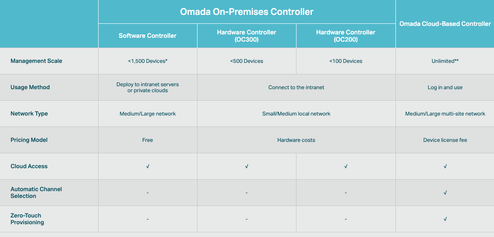

Introduction¶
TP-Link Omada SDN system is an easy-to-use business class corporate network system. It has a controller for discover, set up, and manage the Omada SDN devices. With the TP-Link Omada cloud directory service, and Omada mobile app, you can get instant notifications from your system and make immediate responses. Anytime and anywhere. The solution includes the network controller, wireless access point, network switche, and load balance VPN router.
What is SDN?¶
The SDN stands for Software Defined Networking. Deploying traditional network devices, you have to have a thorough understanding of the network equipment, the interaction behaviors in between, and the set-up commands to each one of the devices. The Omada SDN abstracts the system controls in one center controller provides smooth integrations on the system level and save the detailed device set up to the software commands.
Controllers¶
There are three different flavors of controllers in Omada SDN Solution, hardware controller, software controller, and cloud based controller. Each controller was designed to server a targeted size of network. The OC200 can manager 100 Omada SDN devices. The OC300 can manage 500 devices. The software controller can manage up to 1,500 devices. The cloud based controller is a subscription based management service and has no limit in the number of managed devices.
The network control logics in different controllers are the same. Network devices, switch, router, and wireless AP, can be managed together as a site. A site is a logical network unit consisted by a group of network devices. In most of the cases, a logical site is mapping to a physical network site. In some cases, you can set up logical sites for managing purpose.
Once the site has been set up. It can be freely moved from one controller to another without extra effort. You can set up your first sites on a OC200 hardware controller to start your project. As your business is growing, you can migrate the site settings to the OC300, to the software controller or to the cloud based controller.
Wireless Access Points¶
TP-Link Omada EAP high density wireless access points were designed for crowded environments. With the latest WiFi 6 technology, the Omada EAP can service multi-gig communication wireless. The 802.11ac wave 2 (WiFi5) access points provide solid connections and well coverage for business. The 802.11n access points expands the wireless everywhere for your IoT devices.
Managed Switches¶
All Omada SDN switches came from the field proof JetStream business manage switches. The connecting speed can be varied from 10G, 5G, 2.5G, gigabit, to 10/100. Deploy your network as flexible as you can and manage your network as easy as possible. With the Omada controller, setting virtual networks and personal authentications are just a few clicks away.
Load Balance VPN Router¶
The SafeStream Load Balance VPN routers were designed for small offices as well as the telecommuters. The router can connect up to 4 ISP for voice and data, corporate and private line. You can aggregate bandwidth with the multiple services, or set the rule to direct the certain traffic going to the dedicated line. Easy setup IPSEC VPN and OpenVPN for company connection and personal use. Attack detection and stateful firewall improves your network security. Portal access to personalize your network access. All the tools that everything you need to make the fast an secured connections are set inside the box.
Your Deployment, Your Choice¶
Don’t want to set up a controller? Don’t like the cloud connection?
No problem!
All Omada SDN solution devices can still work in standalone mode without controller. The Omada SDN controller can work standalone without TP-Link cloud service. Depends on your design and your preferences, you can choose the way you want your network behave.